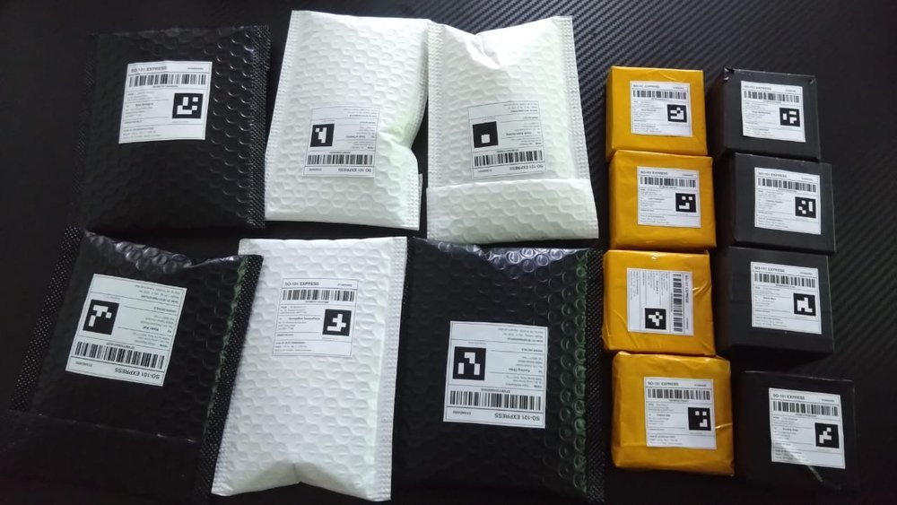
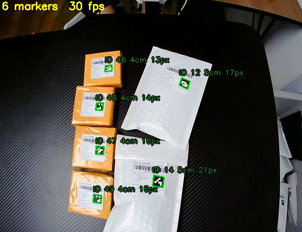
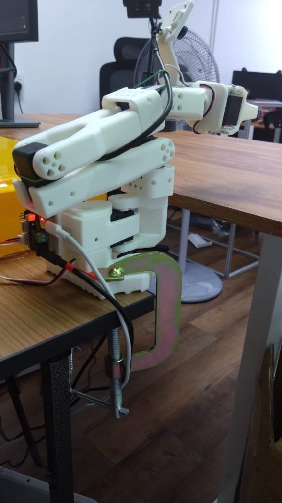
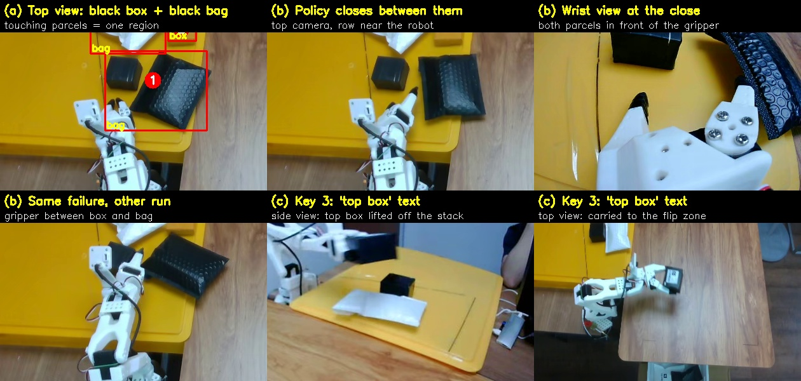

Portfolio · Vision-language-action models
on a low-cost arm
Teaching a robot arm to sort parcels. One test at a
time.
One SO-101 arm learns parcel sorting from my own
demonstrations: pick a parcel from a heap, place it in a flip zone,
turn the label down and push it off the table. I trained Diffusion
Policy and SmolVLA on one 6 GB laptop GPU, and tested each change on
the real robot.
The project in under 3 minutes. The video starts muted:
turn on the sound for the music. All footage plays at real time,
with the real episode clock. Each phase below has its part of
the full 8-minute
video.
23.7 sfor one full parcel cycle:
pick, place, flip, push, back home.
3×robot speed with a B-spline
policy: 4.5 s against 11.9 s (cube task).
87→18 msDiffusion plan time on
the robot after a TensorRT FP16 export.
4/4parcels of a 4-kind heap with
skill texts, no help (one run, skills by human input). One
text: 0/6.
The latest model is SmolVLA with skill texts. A planner
looks at the cameras and sends the next skill as text. The policy
picks the parcel and moves the arm. In this cycle the planner sent
the skill; in most runs it is not reliable yet (phase 05).
3 camerasTop, wrist and side, 30 fps.
PlannerAt home it predicts which parcel the
policy takes next and sends its skill. On the way, the wrist
camera checks it.
Skill text“pinch soft bag by its edge then
drop onto table”
SmolVLAPicks the parcel from the images and moves
the arm.
Pick
Place in the flip zone
Flip if the label is up
Push off the table
Back home
One box takes 23.7 s from the skill text to home.
The overview shows this cycle at 0:11; the video above shows all
of it.
The journey in 7 phases
Each phase starts from a problem of the phase before
it. Click a phase for the details.
Vision, stacks, start, data, compute and the gripper.
1Offline testOn held-out demos: action
error, flip decision, language test.
2Start testDoes the arm still leave home?
A failed checkpoint stops here.
3Robot runsScored by a script. Every video
is checked for hand help.
Every model change passed these three gates, in this
order.
Phase 01
Setting up
Phase 01 in the full video (0:31, with
music).
Before training, the task must be possible for the
robot and the result must be measurable.
Parcels used in the project
Parcels that score themselves
Four self-made parcel kinds: orange box, black box, black bag
and white bag. Each shipping label has its own ArUco marker.
After a run, OpenCV reads each marker: parcel ID, position,
label up or down. A script scores every benchmark run, so no
person counts.

4 kinds, made by hand.

OpenCV finds each marker.
Setup fixes before model fixes
The 180° label flip made the wrist camera hit the table, so
I moved the camera one joint back. A new base height gives an
easier grasp on every parcel. Each fix took less time than more
training.
Camera one joint back.

Base height for an easier grasp.
Phase 02
Designing approaches: from push to pick and place
Phase 02 in the full video (0:41, with
music).
The first design pushed each parcel off the heap. It
failed for a clear reason, so I changed the motion, not the
model.
a
Push (dataset A1)
100 operator demos push each parcel off the tray. On the
robot, the model needed 3 tries and 38 s for one bag.
b
Why it failed
Each demo pushed differently, so there was no single
motion to copy. Pushing also presses down on the tray.
c
Pick and place (dataset B)
99 new demos, each with one smooth place of 2-2.5 s. Two
grasps: boxes by the side walls, bags by the edge.
Label down. The box has its label up, so the
arm flips it, then pushes it off the table.
Phase 03
Model comparison: Diffusion Policy vs SmolVLA
Phase 03 in the full video (1:34, with
music).
Same 99 demos and one task text for both. At first
glance, both work. Each needs different work to run fast and
smooth.
B-spline policy (BSP)
A normal policy predicts one joint target for each 30 fps
frame. Thus the arm moves at the speed of the demos. A B-spline
policy predicts a short smooth curve instead: control points
and knot times for the next 1.2-1.5 s.
Why it works. The curve has a value at every moment,
not only at the frames. A 50 Hz loop reads it by the clock, so
the same curve plays at 1×, 2× or 3× with no
new training. A cubic B-spline has no jumps in position or
speed, and each new curve starts at the point nearest to the
last command, with a short blend. Thus the arm does not jerk
between plans. Cube task, time to back home:
Normal model
11.9 s
BSP at 1×
12.6 s
BSP at 2×
6.5 s
BSP at 3×
4.5 s
The limit. The next plan must arrive before the curve
ends. A SmolVLA-BSP plan takes about 0.22 s, so the safe speed
is about 1.5-2×, and the servos also set a limit. The
parcel tests use 1.5×. Method: Han et al. 2026,
B-spline Policy (arXiv 2607.09648).
Diffusion-BSP at 1.5×: 5 parcels in 86 s.
A hand helps in episodes 3 and 4.
5-parcel heap, 1.5×
Cleared
Time
Diffusion-BSP
5/5 (3 with no help)
86 s
SmolVLA-BSP
4/5
219 s
Diffusion: 87 → 18 ms per plan
A TensorRT FP16 export makes each plan 4.8× faster on the
robot, with the output within 0.15°. A C++ control loop holds
each 20 ms tick within 0.4 ms.
SmolVLA: 258 → 148 ms per plan
torch.compile cuts a denoising step from 13.2 to 3.4 ms. But
vision and language take a fixed 94 ms in every plan. TensorRT
gave no gain, and 5 steps saved only 25 ms.
Lesson: the offline ranking is not the robot
ranking. SmolVLA fit the demos best offline (1.91° against
2.02°), but Diffusion-BSP was the best on the robot. The next
phases use SmolVLA, because only SmolVLA reads a text: this makes
skill texts possible (phase 05).
Phase 04
Fine-tuning: corrections, one skill at a time
Phase 04 in the full video (0:37, with
music).
When the robot fails, I take over with the leader arm
and record the fix. Which corrections I add matters more than how
many.
a
All failures at once: the arm stayed at home
83 corrections in one round. They start in the middle of the
task, so the new model lost its start motion.
b
Far edge: 16 short corrections
Only the pick and the place, 7 % of the training mix. The
far-edge error fell from 16.3° to 2.4°, and the grasp
works on the robot.
c
Stacked boxes: 20 demos + 30 short corrections
The error fell from 3.5° to 1.8°. The robot cleared 3
of 5 stacks and took only the top box.
Takeaway: a correction or a new skill? A
correction fixes a skill that the model already has, like the
far-edge grasp. Stacked boxes were a new skill: only 5 of the 99
demos of dataset B start with a box on a box, so the model could not
do it at all. Corrections cannot teach a missing skill. Thus a new
skill needs full demos (about 20 good ones or more), not DAgger
corrections.
Before. The arm stops at the far edge. A hand
pushes the box closer at 22-29 s.After. Only the top box of the stack (top and
wrist cameras).
Phase 05
Skill texts: make the model read the text
Phase 05 in the full video (2:01, with
music).
With one task text for every parcel, SmolVLA ignores the
text. A distinct text for each skill makes the text count. Then a
planner can send it.
Texts that differ in one word
“pick the box …” and “pick the
bag …” move the motion by 0.4°, less than
the 1.6° noise. The model ignores them.
Distinct, detailed texts
“grasp rigid box with wide grip …”,
“pinch soft bag by its edge …”: 3.4°. The
bag text fits 85 % of the bag frames (chance 33 %).
The text picks the skill. At 35 s a skill change
changes the grasp: first the top box, then the bag.
The live planner
3 cameras → planner → skill text → SmolVLA. At
home, the planner predicts which parcel the policy takes next
(SmolVLM2-500M, or colour regions in the top view) and sends that
skill. On the way, the wrist camera checks it. It runs next to the
policy on the same GPU (1.9 GB at peak). With so little data, it
is not reliable yet.
Who decides what
My system
π0
π0.5 / Hi Robot
Which skill
The planner, as a skill text
The one model, from one prompt
The high level, as a text subtask
Which parcel
The policy, from the images
The one model
The high level names it: “pick up the plate”
The motion
SmolVLA
The one model
The low level
How the high level learns its decisions
π0: no learned planner
It learns to follow short commands from demos labelled in
2-second segments. A person or a separate VLM decides each
step.
π0.5: learned from labelled demos
Each demo segment is labelled with its subtask and the object
boxes. One model learns to predict the next subtask, then the
motion. Experts also steer the robot with subtask commands
(“language demos”).
Hi Robot: two models
Demo segments are labelled as skills. A separate VLM learns to
select the skill from the image and the user's request. π0
does the motion.
My planner: a small version
A probe learns from 99 demos which parcel kind I took next
(box or bag). It names only the skill: the policy still selects
the parcel, so the text and the target can disagree.
Next step: a grounded subtask, for example
“pinch the white bag at the front of the tray”. Label each
demo with the parcel it took (from the grasp position), train SmolVLA
on that text, and train the planner to predict it. My live key
presses are the same kind of data as the π0.5 language demos.
Sources: π0,
π0.5,
Hi Robot.
Phase 06
Benchmarks: how far it goes
Phase 06 in the full video (1:22, with
music).
4 parcel kinds: orange box, black box, black bag and
white bag. The black box and the black bag look alike. Success means
all parcels cleared, 0 wrong labels and no help.
One text for all skills
Successes
1 kind, 3 parcels
4/4
1 kind, 4 parcels
1/6
4 kinds, 4 parcels
0/6
With one text, the model cannot select the
skill in a mixed heap. The flip is reliable: 1 wrong label in
108 cleared parcels.
4/4
Skill texts, 4-kind heap
All 4 parcels cleared with no help in 113 s. The automatic
planner is not reliable yet, so I sent each skill by human input
(keys). The black box took several tries. This is one run.
Not passing yet: the top-box skill. On
stacked boxes, the top-box text wins only 41 % of the frames in the
offline test (pass: 80 %), and the error stays about 4° with any
text (2° on normal frames). On the robot, it cleared 3 of 5
stacks, and a model also used the stack grasp on normal boxes.
SmolVLA does not see the stack well: the vision, not the text, is
the problem.
Phase 07
Limits and next steps
Phase 07 in the full video (0:37, with
music).
What still fails, and the fix I would try next.
Area
Limit
Fix
Vision
Touching dark parcels look like one region.
Use a better camera and even, fixed lighting. Add a
segmentation planner that splits touching parcels.
Stacks
SmolVLA does not see a stacked box well, so the top-box
skill does not pass.
Record 20-25 more box-stack demos, and let the planner find
the stack and send the top-box text.
Start
It waits at home 14-34 % of the time.
Record corrections that start at home, keep them short,
and pick each model with the start test.
Data
With one text, 4+ parcels fail. The planner is not reliable
yet.
Record more demos of full heaps, labelled with the parcel
taken, and train the planner on them.
Compute
A SmolVLA plan takes 148 ms, even compiled (6 GB laptop
GPU).
More GPU compute and memory bandwidth make it faster. More
VRAM does not, but it fits a larger planner (2.2B: about
4.5 GB).
Robot
On boxes, the gripper closes many times before it
holds.
Add soft, high-friction pads and more grip force, so a box
holds at the first close.
Vision limit. A black box touches a black bag.
The arm aims at the gap and closes on air.

(a) The top view makes one region of the two
black parcels. (b) The grasp in the gap. (c) The
top-box text lifts only the top box.
First make the model
reliable for the task. Then make it faster.
zt@so101:~/parcel_setup$ cat README --verbose
Parcel sorting with imitation learning on a 6 GB laptop
SO-101 arm, 3 cameras, LeRobot. Diffusion Policy and
SmolVLA from teleoperated demos, B-spline execution, inference
speed-ups, DAgger rounds, skill texts and a live VLM planner (not
reliable yet). The panels follow the 7 phases of the video. Each panel says why we
tested it (#), the data, and what it showed (=>).
23.7 sone parcel cycle, skill text
to home (sk3d + planner)
87→18ms per plan on the robot,
TensorRT FP16, error 0.15°
consistent demos beat more demos: B has fewer frames than A1 (73k vs 102k) and works.
p03 · models
the same dataset B for both policies. SmolVLA trains only its action expert (100M of 450M); Diffusion trains from scratch.
Run
Init
Steps
Batch
Time
Loss
diffusion_parcel_b_80k
scratch
80k
16
9.4 h
0.005
diffusion_bsp_parcel_b_40k
diffusion
b
40k
16
5.1 h
0.018
smolvla_parcel_b_80k
smolvla_base
80k
12
27.4 h
0.025
smolvla_bsp_parcel_b_40k
smolvla b
40k
12
13.8 h
0.100
smolvla_parcel_b_fb (10k picked)
smolvla b
15k
12
-
-
smolvla_parcel_b_fbs (10k)
fb 10k
10k
12
-
-
smolvla_parcel_b_sk3d_10k
smolvla b
10k
12
~3.4 h
-
smolvla_parcel_b_sk5d_10k
smolvla b
10k
12
3.4 h
-
Diffusion 89M (U-Net shrunk; default 278M did not fit
6 GB). SmolVLA 450M, 100M trained (VLM frozen, action expert
only).
p03 · offline eval (dataset B)
Test 1: MAE (deg, 5 arm joints, next 1 s). Test 2:
flip decision on 99 eps (probe ceiling 95). Test 3: share of
predictions that follow swapped images.
Model
T1 train ref
T1 held-out
T2 /99
T3 flip img
T3 no-flip img
SmolVLA B 80k
1.91
11.44
95
0.39
0.90
SmolVLA-BSP B
2.39
12.04
93
0.29
0.92
Diffusion B
2.02
11.56
95
0.47
0.95
Diffusion-BSP B
3.08
12.40
91
0.61
1.00
Offline, SmolVLA fits best. On the robot, Diffusion-BSP is best.
The held-out eps are old pilot eps with another approach, so the
held-out error is high for all. T3 says a missed flip is more likely
than a wrong flip.
p03 · robot eval (dataset B)
the same heaps for each model, one run per model: an indication, not a controlled test.
5-parcel heap (hard)
Model
Cleared
Time
Labels
Failure mode
Diffusion-BSP, 1.5x
5/5
86 s
5/5
hand pushed the box closer in
eps 3, 4
SmolVLA-BSP, 1.5x
4/5
219 s
4/4
17-27 s idle at start; no grasp on small
boxes
SmolVLA RTC
3/5
231 s (limit)
3/3
75 s hover before grasp
8-parcel heap (training heaps: 4-5 parcels)
Model
Success (log)
No help
Main failure
Diffusion-BSP, 1.5x
6/8
5/8
stops at far edge
SmolVLA-BSP, 1.5x
3/8
1/8
moves other parcels off the tray
SmolVLA RTC
8/8 in 341 s
-
black box treated as a bag
Medium (bag on bag + box on box)
All 3 models: 2/4 with no help. Bag on bag works (about 25 training
starts). Box on box fails (5 training starts): pushed as one stack,
or the bottom box falls.
Diffusion-BSP B, 5-heap, eps 0-4 back to back,
1.5x motion, real time. Hand help: ep 3 (50-55.5 s), ep 4
(71-78 s).SmolVLA B (RTC), medium, 66-87 s: the box-on-box
stack goes off as one parcel.
Caveat: one heap per model, layouts not identical.
Indication, not a controlled test.
p03 · inference, control and bsp
each plan must arrive in time. BSP turns a plan into a curve, so speed is a setting, and the plan time sets the top speed.
BSP (Han
et al. 2026, arXiv 2607.09648; fit, chunk and decode follow the
official bspline_action.py, MIT): the policy predicts
one cubic B-spline segment in place of a 30 fps chunk: 16 rows (10
interior knots + 2 x degree), column 0 the knot time, columns 1-6
the control points. Targets: fit error ≤ 0.5° (median
0.41°), 4.9 frames per knot, about 1.4 s per segment. The 50 Hz
executor samples tau = t · 30 · speed, starts a new
segment at the point nearest the last command and blends it in
(smoothstep). Speed limit vmax = (1 − f) S / (30
L): SmolVLA-BSP (L 0.22 s, p95 0.3 s) about 1.8x; Diffusion-BSP
(L about 95 ms) about 2.3x higher.
bsp/bench_plan.py: 5 fixed frames,
fixed noise, 40 repeats. Noise floor 0°, <1 % time. Gain vs
the reference row.
Change
Plan p50/p95 ms
Err °
Gain
ref Diffusion-BSP B
87.7 / 105.7
0
-
Diffusion TRT FP32
35.0 / 59.4
0.064
2.51x
Diffusion TRT FP16
13.1 / 13.2
0.149
6.69x
ref SmolVLA-BSP B
258.0 / 261.4
0
-
SmolVLA-BSP compile
148.0 / 163.2
0.141
1.74x
SmolVLA 5 flow steps, eager
137.3 / 150.6
2.12*
1.88x
SmolVLA 5 flow steps, compile
123.1 / 134.0
2.12*
not used
SmolVLA TRT BF16
225.8 / 234.6
2.330
rejected
* Against the 10-step output (mean 0.51°). The
compiled 5-step plan is 0.20° from 5-step eager.
smolvla: where the plan time goes
Part (one plan, 3 cameras)
ms
Fix
vision encoder (SigLIP x3)
~73
none yet
VLM prefix pass (16 layers)
~21
bf16 (was fp32)
denoise: 10 steps x 16 tokens x 16 layers
10x13.2 → 10x3.4
compile + static
cache
A denoise step is ~1,200 small kernels: launch-bound,
not compute-bound. torch.compile fuses them (13.2
→ 3.4 ms). Then the fixed vision + prefix pass is the floor.
SmolVLA-BSP plan on the robot
ms
fp32 VLM (warm-start bug)
325
bf16 VLM
223
bf16 + --compile default
138-152
robot a/b: trt + c++ (Nov 16)
Diffusion-BSP B, 3-parcel heap, DDIM 10, 1.5x,
max step 6, blend 0.2. 3 episodes each (B: 4).
Run
Plan ms
Hold %
Tick p99/max
Rev/s
Done s
OK
A python
87 / 95
0.1-1.2
21.4 / 24.1
0.8-2.3
23.7, 15.3
2/3
B trt fp16
18 / 36
0
22.4 / 24.5
1.2-2.6
19.2, 14.6
2/4
C trt + c++
19 / 34
0
20.1 / 20.4
1.4-2.5
15.4, 16.0
2/3
Plans arrive early, so the arm never holds. Jerk and
success did not change: the seam jump comes from plan-to-plan
variance, not plan delay.
Control (50 Hz, fake arm, real cams + video)
Tick p95 / max ms
Python control
20.13 / 30.69
C++ control process
20.07 / 25.04
TRT FP16 + C++
20.07 / 20.17
Servo bus read (6 servos), Python → C++
max 5.46 → 1.41
BSP speed limit
Cube task (spot SQ)
Back home
Diffusion, one target per frame
11.9 s
Diffusion-BSP 1x
12.6 s
Diffusion-BSP 2x
6.5 s
Diffusion-BSP 3x
4.5 s
# next segment must arrive before this one ends
margin = (1 - f) * S / (30 * v) - L
v_max = (1 - f) * S / (30 * L)
# SmolVLA-BSP: L=0.22-0.3 s, S=33-40 -> 1.8-3x
Speed
Rev/s old
Rev/s new
Success (cube)
1x
4.6
0.5
3/3
1.5x
8.4
1.2
3/5 (1.25-1.75x)
2x
8.3
2.5
2/4
2.5x
19.1
6.8
3/4
Diffusion: TensorRT FP16 + C++ loop, 87 → 18 ms on the robot. SmolVLA: compile fixes the denoise; the fixed ~94 ms vision + prefix pass is the floor.
p04 · dagger rounds (corrections)
corrections with the leader arm, one skill at a time; each checkpoint passes the offline start test first.
Recipe: lr 1e-4, warm-up 500, batch 12, VLM frozen.
Start test gate: roll ≥ 15° and B fit ≤ ref + 1°.
Model
Roll °
Skill fit °
B fit °
Robot
smolvla_b (ref)
32.0
6.5 box / 16.3 far
1.2
-
round 1 dg (tails cut)
3.7
-
-
stays home
b_fe 5k
29.4
2.4
1.6
far edge works
b_box 5k
19.8
3.5
1.7
box on box fails
b_fb 10k
21.1
1.4
1.4
both skills
b_fbs 10k
18.3
1.8 stack
1.7
tilted
fbs 10k, fbs_hard ep 1: top box only,
22 s. 3/5 clean (all middle stacks).parcel-skill-boxstack-cut ep 1: one of
the 20 box-stack demos (dataset B had about 5).
short, skill-specific corrections at a small share (7 %) keep the start motion. All failures at once (45 % of the frames) do not.
correction or new skill? dataset B has only 5/99
box-on-box starts (eps 40, 75, 76, 80, 81), so the stack is a new
skill, not a correction. DAgger fragments only fix a skill that is
already there (far edge). A new skill needs about 20 or more full
demos (the 20 box-stack demos; in sk5d, 13-16 episodes per new skill
were not enough).
p05 · skill texts (language test)
does SmolVLA read the task text? One text per episode,
fine-tune from smolvla_b, 10k steps.
lang_test.py on held-out frames. Wins =
the correct text has the lowest error. Shift = change with another
text; noise = same text, other seed (deg).
Run
Texts
Bag wins
Box wins
Box/bag shift vs noise
Verdict
b_all (control)
1 for all
8-30 % (all groups)
0.3-1.4 vs 1.6-2.9
ignores text
b_sk3
3, differ in 1 token of 11
("box"/"bag")
62 %
57 %
0.40 vs 1.62
ignores box/bag
b_sk3d
3, no shared token
85 %
75 %
3.41 vs 1.63
reads text
b_sk5d
5, no shared token (+ far
edge, on table)
89 %
74 %
3.49 vs 1.61
old 3 kept, new 2 not
learned
# sk3d / sk5d texts (no shared token)
box "grasp rigid box with wide grip and set it at flip zone"
bag "pinch soft bag by its edge then drop onto table"
top "lift upper carton off stacked pile"
# sk5d only: far edge (13 eps), on table (16 eps)
far "reach far rim, pull parcel closer"
push "sweep lone item beyond wooden desk border"
sk5d: the 2 new skills (13-16 eps each) are not learned; a skill
needs about 20 eps.
robot, operator as the planner (sk3d, keys 1/2/3 live)
Test
Scene
Result
A, 8 eps
box + bag side by side, each text
Target = parcel nearest the flip zone (image). Text = grasp
style. Text vs target conflict → hesitation.
C, ep 0
box on a box + bag; key 3, then key 2
top box off the stack, then the bag
Learned split: target from the image, skill from the text. To pick
the target with text, the data needs one scene with two texts and two
targets.
sk3d_skilltext_c ep 0, 0-46 s, real
time. Top-box skill at the start, bag skill by human input
(key 2) at ~35 s: placed from the key log and the motion
start.sk3d_planner_drive ep 0, 6-14 s: grasp in
the gap between black box and black bag.
p05 · live planner and study
send the skill text automatically: a small VLM next to SmolVLA on the same 6 GB GPU.
SmolVLM2-2.2B-Instruct. P(yes) = sigmoid(lse(Yes) -
lse(No)) from one forward pass. Priority in code: stack > far edge
> box > bag; empty → home. 120 labelled home frames: 71 far,
25 stack, 19 box, 5 empty.
Method
Stack AUC
Stacks found
Far AUC
Skill acc
Time
Zero-shot, top + side
0.74
1/25
0.82
69 %
1.5 s
Zero-shot + wrist, tiles
0.90
60 %
-
-
4.4 s
Linear probe (last token), 3 cams
0.96
23/25
0.98
81 %
~2 s
Probe: logistic regression, 5-fold CV by episode. Still 12 false
"stack" calls.
fit next to SmolVLA on 6 GB
2.2B (~4.5 GB) does not fit. SmolVLM2-500M (1.9 GB peak with
SmolVLA): bag AUC 0.99, stack AUC only 0.84.
Next-parcel kind
Model
Zero-shot
Probe
Time
home, 3 cams
500M
51 %
74 %
0.34 s
wrist, 1 s before grasp
500M
55 %
99 %
0.09 s
live on the robot (live_planner.py)
A thread next to the policy plans at home (top-view colour
regions, topview.py, or the home probe) and checks with
the wrist probe on the way. The home probe did not transfer to new
heaps ("bag" in 27/31 visits). The colour regions were right, except
for a black box touching a black bag. One drive episode (ep 3) ran
on planner texts only, but most drive runs still needed keys: the
planner is not reliable yet, so the benchmark run in p06 uses human
input.
(a) top-view regions: black box + black bag = 1. (b)
policy closes in the gap. (c) key 3: top box off the
stack.
study: who decides what
Layer
ours
π0
π0.5 / Hi Robot
which skill
planner → skill text
one VLA, one prompt
high level → text subtask
which object
the policy, from the images
one VLA
the high level names it ("pick up the plate")
motion
SmolVLA action expert
one VLA (action expert)
low level (π0 or the same model)
link
the text must match the parcel the policy takes
end to end
the subtask names the target
study: how the high level learns its decisions
System
High level learns from
Output
π0
nothing: a person or a separate VLM gives each step. The
model learns 2 s segment labels, so it follows short
commands
-
π0.5
every demo segment labelled with its subtask + object boxes;
expert "language demos" (subtask commands given live, ~11 % of
the high-level data, but needed); web data
subtask text that names the object; same model
Hi Robot
demo segments labelled as skills (1-3 s) + synthetic user
prompts from a large VLM
skill text; separate VLM, π0 below
ours
99 dataset-B start frames: which kind the operator took next
(home probe, logistic regression)
box / bag; the policy still picks the parcel
ours names only the skill; theirs also names the object,
and the low level is trained on that text. Next: label each demo
with the parcel it took (grasp position in the top view: fk.py +
top_fit.py + topview.py), train SmolVLA on that grounded text, and
train the planner to predict it. The live key logs
(skill_*.csv) are the same kind of data as the π0.5 language
demos. Sources: π0,
π0.5,
Hi Robot.
p06 · benchmarks
script-scored heaps by number of parcels and number of kinds. Success = all cleared, 0 wrong labels, 0 help.
smolvla_b_fb 10k (one task text for all
skills), Nov 18. Scores in
bench/rollout_bench_parcel_smolvla_b_fb_<set>/scores.csv.
Help per episode in brackets.
Heap
Eps
All cleared
Success
Parcels
Help
Parcels/min
At home
1 kind, 2 parcels
6
6
4
12/12
2 (0.3)
2.2
18 %
1 kind, 3 parcels (pilot)
4
4
4
12/12
0 (0)
1.8
19 %
2 kinds, 3 parcels
8
8
2
24/24
7 (0.9)
1.7
14 %
3 kinds, 3 parcels
10
8
5
25/30
4 (0.4)
1.5
34 %
1 kind, 4 parcels
6
4
1
18/23
5 (0.8)
1.3
14 %
4 kinds, 4 parcels
6
2
0
17/24
17 (2.8)
1.0
30 %
skill texts by human input (sk3d, test B ep 1)
Heap
Cleared
Help
All cleared
Skill source
4 kinds, 4 parcels
4/4
0
113 s
keys (human input); the planner is not reliable yet
Order (episode clock): white bag, pinched at 7 s, off
the edge at 16 s; black box, never grasped: out of the tray at 24 s,
off at 68 s after more tries; black bag, pinched at 79 s, off at
88 s; orange box, box grasp at 104 s, off at 113 s. Skill keys: bag
at the start, then box at 36 s, bag at 70 s, box at 91 s. The key
log has no episode clock, so these times come from the resets and
the grasp style (±2 s).
top-box skill (stacked boxes): not passing
Offline language test, box-on-box frames: the top
text wins 41 % (sk3d) and 19 % (sk5d), pass 80 %; the error is
about 4.0-4.2° with any text (normal frames about
2.1-2.4°). Robot: fbs clears 3/5 stacks but uses the stack
grasp on normal boxes (2/5 on a normal heap); b_box grasps at table
height (the bottom box or the whole stack). SmolVLA does not see the
stack well: a vision problem, not a text problem.
more parcels and more kinds both hurt; with one text the
model cannot select the skill in a mixed heap. With skill texts sent
by human input, the 4-kind heap clears (one run). The flip is
reliable: 1 wrong label in 108 cleared parcels. The top-box skill
does not pass yet, because the model does not see the stack.
p07 · limits and next steps
what still fails, the evidence, and the fix to try next.
Area
Limit
Evidence
Fix
Vision
touching dark parcels look like one
top-view regions merge a black box and a black bag; grasp
in the gap; bag push on the black box (8-heap)
better camera and even, fixed lighting; a segmentation
model in the planner to split touching parcels (a watershed
cut split single bags, so it is not used)
Stacks
top-box skill does not pass
stack frames: top text wins 41 % / 19 % (pass 80 %), error
about 4° with any text; fbs uses the stack grasp on normal
boxes; planner: zero-shot finds 1/25 stacks, 500M probe AUC
0.84
20-25 good box-stack demos (a new skill, not corrections);
a planner stack check: the 2.2B probe (23/25) in 4 bits, to fit
next to SmolVLA
Start
waits at home 14-34 % of the run
benchmark "at home" column; kind3 e2 waited 145 s of
179 s
corrections that start at home; short fragments (7 % of
the mix kept the start, 45 % broke it); pick the checkpoint
with the start test
Data
heaps of 4+ parcels fail
1/6 at 4 parcels; no model clears 8 with no help; far edge
in 14/99 demos; no demo recovers a parcel on the table
more full-heap demos and corrections, labelled with the
parcel taken (from the grasp position), to train the
planner; or a larger model
Compute
SmolVLA plan 148 ms, even compiled
fixed ~94 ms vision + prefix pass; TensorRT no gain; 1.9 GB
peak of 6 GB, so memory size is not the limit
more compute and memory bandwidth (more CUDA/tensor cores,
clock) for speed; more VRAM only for larger models (2.2B
planner ~4.5 GB, batch > 12)
Robot
box grasps need many tries
hard-heap eps 0-2: up to 45 s of grasp retries on orange
boxes, the gripper opens and closes many times; bags do not
show it
soft, high-friction jaw pads and more grip force; then
measure the first-close hold rate
SmolVLA RTC, 8-heap, 203-225 s: bag push on
the black box.SmolVLA-BSP, 8-heap ep 1: one move scatters the
tray. Real time.Diffusion-BSP, 8-heap ep 3: far-edge hover,
hand assist at 22-29 s. Real time.
bugs.log
Symptom, how it got in, how we found it, fix,
result. Click to expand.
ACT jerks every 100 frames
fixed
symptom
Jumps up to 69.9° at frames 100, 200,
300.
got in
ACT runs the full 100-step chunk blind, then
re-plans.
found
Joint plots of the rollout against the
demos.
fix
Temporal ensembling: max jump 3.1°.
Policy ignores the cameras at run timefixed
symptom
Arm stalls, never closes the gripper.
got in
Start pose outside the data (shoulder lift
-58° vs -92 to -104°) and a layout that changed every
demo.
found
Image-swap test: camera influence about 4x lower
on rollout frames than on demo frames.
fix
Fixed home pose, tape markers, re-record. Then
spread the start spots: swap score 0.00 → 0.75.
Control loop at 10-15 Hz
fixed
got in
prepare_observation_for_inference
converts images to float on the CPU.
found
Loop timing logs.
fix
fast_prepare sends uint8 to the GPU
first: about 25 Hz.
Loop drops to 5 Hz, keys dead
fixed
got in
Rerun rr.log blocks; mpv reads
the terminal keys.
fix
Rerun off; mpv preview of the newest frame in a
thread, --input-terminal=no, global key
listener.
Diffusion too slow to plan
fixed
got in
DDPM default, 100 steps (0.8 s).
fix
DDIM 10 steps (0.1 s); BSP uses 5.
BSP jerks above 1xfixed
symptom
Operator saw jerks at 1.35x.
got in
Each plan starts from new random noise, so the
new segment starts 7-9° (p95) away from the last command;
the 4°/tick clamp spreads the jump over 2-3 ticks.
found
--sweep debug logs,
diagnose_bsp.py, offline grid of 1,920 executor
settings.
fix
--blend 0.2 --ddim-steps 5 --max-step
6: reversals 4.6 → 0.5 /s at 1x, 8.4 → 1.2 at
1.5x.
torch.compile recompiles, then corrupts the KV
cachefixed
got in
DynamicCache.crop() changes the
stride each step (recompile). The cache holds a view of CUDA graph
memory that the next replay overwrites.
found
TORCH_LOGS="graph_breaks,recompiles";
PyTorch raised on the overwrite. Without that check the robot
would get wrong actions.
fix
StaticPrefixCache: fixed read-only
prefix buffers. Step 13.2 → 3.4 ms, max diff 0.106° (one
servo step is 0.088°).
RTC: three engine bugsfixed
autograd
Guidance under enable_grad with
all params trainable. FREEZE=1: 273 → 204 ms,
same output.
delay
Queue skips ceil(latency x 30), 1-2
more than used, so the arm jumps ahead.
RTC_EXACT_DELAY=1.
outlier
Latency tracker keeps the all-time max, so one
compile plan sets the delay for the run.
COMPILE=default warms both graphs first.
Cast to the --init dtype (bf16). Plan
325 → 223 ms with the other fixes.
DAgger round 1: robot stays at homefixed
got in
83 corrections = 45 % of frames, each with a
1.4 s idle tail at home and no start motion.
found
Start test (wrist roll turn on the home frame):
32° old, 3.7° DAgger. Control run on B only, same recipe:
27°. So the data, not the recipe.
fix
One skill at a time, trimmed fragments (pick +
place only), 7 % share: roll stays 29.4°.
fbs tilts to the new skill
model rejected
got in
Box data 33 % of frames, applied twice (fbs
from fb). Same task text for every skill.
found
Robot: stack grasp on normal boxes, 2/5 on a
normal heap, 42 % still. Offline roll 32 → 21 →
18° showed it first.
fix
Use fb 10k. Rule: fine-tune once on a balanced
mix; per-skill task text + planner.
Grasp finder misses big boxes
fixed
got in
Rule "gripper < 30" never fires on a wide
box.
fix
Drop of 25 from the running max of the gripper
command.
BSP start-test roll is NaN
fixed
got in
BSP plans cover 10-16 frames, NaN after.
fix
Roll between the first and the last finite
frame.
Jerky runs with Chrome open
procedure
symptom
Loop down to 6 Hz, jerk 2.7x, 3.4-3.9
flips/s.
fix
No other programs during runs; start with the demo
wrist roll (a 180° start is out of distribution).
Planner: 17 s per decision
fixed
got in
SmolVLM2 image splitting makes many tiles per
image.
fix
do_image_splitting=False: 1.5 s.
Results log hides the blend of Diffusion runsfixed
got in
The settings text added blend only
inside the SmolVLA branch.
found
A/B baseline jerked: rev/s 6.4 vs 1.2-1.9 on Nov
11. diagnose_bsp.py showed blend 0.2 in every old
debug log, but the CSV said nothing, so the rerun used 0.
fix
Log the blend for all models. Debug logs are the
source of truth for settings.
SmolVLA TensorRT BF16 error 2.3°open
result
258 → 226 ms, error 2.33° > limit.
VLM is already bf16 and not the slow part. Not used.
SmolVLA follows a distractor on a trained spotopen
result
Cube task: blue cube on a trained spot, SmolVLA
picked 0/6 vs 3/3 off-spot (Fisher p = 0.012). ACT and Diffusion
6/7. Lead: frozen pretrained vision encoder.
config
# Diffusion (B)
unet=(256,512,1024) horizon=64 n_obs=2 img=240x424 amp=1
batch=16 steps=80k infer: DDIM 10 (BSP: 5)
# SmolVLA (B)
init=lerobot/smolvla_base train_expert_only=1 freeze_vision=1
batch=12 steps=80k decay=80000 chunk=50 flow_steps=10
# BSP executor
segment=16 knots x 6 joints control=50Hz replan at 50 %
--speed 1.5 --blend 0.2 --max-step 6 --ddim-steps 5
--trt fp16 --control cpp # Diffusion-BSP, new path# SmolVLA RTC (default)
--inference.type=rtc --inference.rtc.execution_horizon=10
--inference.queue_threshold=30
FREEZE=1 RTC_EXACT_DELAY=1 COMPILE=default SMOOTH=7
# skill fine-tune
lr=1e-4 warmup=500 batch=12 fb: B + far + box x3, 15k (pick 10k)
# skill texts (one text per episode, from smolvla b)
sk3d: 160 eps, 10k sk5d: 189 eps, 10k held out: 12 / 18 eps
# robot: keys 1-5 send the skill text live
LIVE_SKILL=1 SKILL_SPLIT=skill5d_split.json